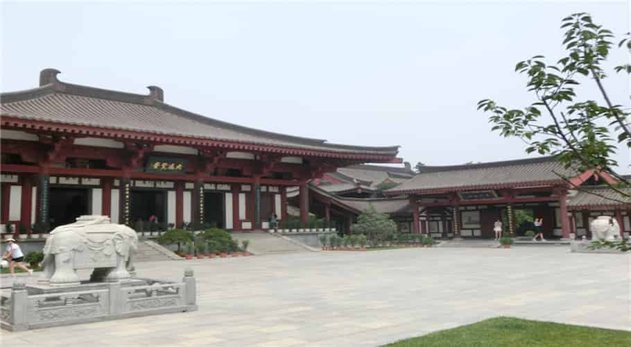

Über China - Geschichte
Chinas dokumentierte Geschichte reicht fast 5000 Jahre zurück und beginnt mit der Herrschaft des sagenumwobenen Kaisers Huangdi im Jahre 2698 v.Chr. Seit dieser Zeit wurde China von 396 Kaisern und 162 Königen aus 83 Dynastien regiert, die im Jahre 1911 von den chinesischen Republiken abgelöst wurden.
Neusteinzeit und die ersten Königshäuser (9000 – 770 v.Chr.)
Um das Jahr 9000 v.Chr. herum wurden die ersten Siedler im Gebiet des Gelben Flusses, der als Wiege der chinesischen Zivilisation bekannt ist, sesshaft. In dieser Zeit entwickelten die frühen Chinesen den Bronzeguss, glasierte Töpferei, Viehzucht und Ackerbau sowie stellten erste Musikinstrumente her. Jedoch sollten noch 7000 Jahre bis zur ersten offiziellen Dynastie, der Xia-Dynastie, vergehen.
Mit der Xia Dynastie beginnt im Jahre 2000 v.Chr. eine Zeit mächtiger Dynastien, die weite Teile des chinesischen Kulturraumes beherrschen. Während dieser Zeit entstehen der Glaube, dass die Herrschaft des Königs vom Willen des Himmels abgeleitet sei sowie der Brauch, dass stets der älteste Sohn dem Herrscher nachfolgen solle. Die Chinesen entwickeln die Grundzüge ihrer Schrift und lernen Seide herzustellen. Die große Ära der ersten Dynastien endet mit dem Zhou König You, der um das Jahr 770 v.Chr. seine Frau vom königlichen Hof verjagt und seine Konkubine heiratet. Das Feudalreich der Zhou wurde durch komplizierte Familienbande zusammengehalten und diese Handlung des Königs führte zur Revolution der Familie der Königin und de facto zur Unabhängigkeit der einzelnen Fürstentümer.
Von der Frühlings- und Herbstperiode, den Streitenden Reichen und der ersten Einigung (770 – 210 v.Chr.)

Die Jahre zwischen 770 v.Chr. und 221v.Chr. werden allgemein als Frühlings- und Herbstperiode (benannt nach den Annalen des Konfuzius) und die Zeit der streitenden Reiche (benannt nach dem Werk Liu Xiangs) bezeichnet. Obwohl dieser Zeitraum vom ständigen Kampf der einzelnen Fürstentümer und späteren Königreiche um die Vorherrschaft in China gekennzeichnet war, gilt er als goldenes Zeitalter der chinesischen Kultur. Konfuzius entwarf seine traditionsbetonte Philosophie und Lao Tse mitbegründete den Taoismus, eine der heutigen Weltreligionen – die beiden sind wohl die prominentesten Vertreter der Hundert Schulen der Philosophie dieser Periode. Darüber hinaus lernten die Chinesen, wie man Eisen schmiedet, entwickelten die Modulbauweise zur Massenfertigung und erfanden die Verchromung, die erst 1938 in Deutschland wiederentdeckt wurde.
Diese technologischen Neuerungen ermöglichten es dem Reich von Qin, nachdem China seinen heutigen Namen trägt, innerhalb von 9 Jahren die übrigen Königreiche Chinas zu erobern und China im Jahre 221 v.Chr. zu einen. Um seine Einzigartigkeit auszudrücken, gab sich Qin König Ying Zheng den Titel Kaiser (Huangdi). Der erste Kaiser Chinas ist eine durchaus umstrittene Figur. Auf der einen Seite einte er das Reich, die Maße und die Schrift. Er ließ die erste Chinesische Mauer bauen und seine Grabanlage, beschützt von der Terrakotta Armee, ist weltberühmt. Er teilte China in 36 Präfekturen ein und schaffte die Erblichkeit administrativer sowie militärischer Ämter ab. Es war jedem freien Mann möglich, seinen Fähigkeiten und Leistungen nach aufzusteigen. Auf der anderen Seite führte er ein drakonisches Rechtssystem ein, das selbst die kleinsten Einzelheiten des täglichen Lebens regelte. Alle diesem System abweichende Philosophien wurden verboten und ihre Schriften verbrannt, 460 konfuzianische Gelehrte zur Abschreckung lebendig begraben. Gegen Ende seiner Herrschaft waren rund 10% der Bevölkerung Chinas versklavt und schufteten für seine gewaltigen Bauvorhaben.
Die Han-Dynastie (210 v.Chr. – 220 n.Chr.)

210 v.Chr. stürzte ein Bauernaufstand den Enkel Ying Zhengs und beendete die Qin Dynastie nach nur 11 Jahren. Acht Jahre lang bekämpften sich die Führer des Aufstandes in einem blutigen Bürgerkrieg bis 202 v.Chr. Liu Bang den Sieg davontrug und die Han Dynastie begründete, nach der sich heute die Mehrheit der Chinesen benennt. Während der über 400jährigen Herrschaft der Han Kaiser wurde der Konfuzianismus in China zur Staatsphilosophie erhoben und die Grundlagen für das berühmte chinesische Bildungsbeamtensystem gelegt, das bis 1911 Bestand haben sollte. Die Han unterteilten die Bevölkerung in vier Schichten: Als höchste Schicht galt die Aristokratie gefolgt von den Beamten. Die Handwerker und Bauern belegten Platz drei in der sozialen Hierarchie und die Kaufleute, die selbst nichts erzeugen, stellten die unterste Klasse dar. In dieser Zeit entdeckte Cai Lun die Papierherstellung und die Seidenstraße entwickelte sich als feste Handelsroute zwischen Ost und West.
Erneute Teilung und Aufstieg und Niedergang der Tang-Dynastie (220 – 907 n.Chr.)

220 n.Chr. brachte der Gelbe Turban Aufstand die Han Dynastie zu Fall und für die nächsten rund 400 Jahre war China wieder fast durchgehend geteilt. Dies änderte sich, als sich im Jahr 618 der mächtige Beamte Li Yuan selbst zum Kaiser erklärte und es innerhalb von fünf Jahren schaffte, China erneut zu einen. Er begründete die Tang Dynastie, eine der wohl weltoffensten Dynastien in der Geschichte Chinas. Obwohl die Tang Kaiser selbst Buddhisten waren, gewährten sie die Glaubensfreiheit. Sie erlaubten, dass Ausländer Chinesen heiraten und verheirateten selbst Mitglieder ihrer Familie an ausländische Herrscher und Fürsten der Minderheiten, um den Frieden zu wahren. In dieser Zeit bestieg die erste und einzige Kaiserin, die in eigenem Namen herrschte, den chinesischen Thron: Wu Zetian, frühere Tochter eines Kaufmannes, die ihre Herrschaft von der vorchristlichen Dynastie der Zhou ableitete. Die Tang Dynastie leitete das zweite goldene Zeitalter der chinesischen Geschichte ein. Unzählige buddhistische Schriften gelangten von Indien aus nach China und 492 Buddha-Höhlentempel wurden aus dem Felsen geschlagen, von denen heute noch 232 erhalten sind. In dieser Zeit erfanden die Chinesen den Buchdruck und Sun Simiao verfasste sein Standardwerk zur Medizin: Rezepte, mehr wert als tausend Stücke Gold, welches über 800 Heilpflanzen und über 5.000 Anwendungen beschreibt. Eine Vielzahl an Schulen wurde gegründet und insgesamt über 50.000 Gedichte verfasst.
Zweite Teilung, Yuan und Ming (907 – 1644 n.Chr.)

Im Jahre 907 setze ein Militärgouverneur den letzten Tang Kaiser ab und leitete erneut eine fast 400 Jahre währende Periode eines geteilten Chinas ein. Kublai Khan, der Enkel Dschingis Khans, schloss 1279 die Eroberung Chinas ab, verlegte die Hauptstadt seines Reiches vom mongolischen Karakorum nach Peking (damals Dadu) und begründete die Yuan Dynastie, die bis 1368 Bestand haben sollte. Auch in dieser Zeit fand ein reger kultureller Austausch mit dem Westen statt: Islam und Lamaismus, neue Feldfrüchte sowie westliche Musikinstrumente fassten in China Fuß; Schießpulver und Porzellan gelangten in den Westen. Dennoch wurden die Yuan Kaiser von den Chinesen stets als Eroberer betrachtet, da sie die Bevölkerung in vier Klassen einteilten, von denen die Chinesen selbst die zwei niedrigsten stellten.
1368 führte der ehemalige buddhistische Mönch Zhu Yuanzhang einen Bauernaufstand gegen die Yuan, eroberte schließlich die Hauptstadt Dadu und begründete die Ming Dynastie. Die Ming Kaiser hielten als erste Dynastie ständigen Kontakt zu den Ländern Europas und verpachteten 1557 Macao an die Portugiesen. Berühmt ist die Ming Dynastie vor allem wegen vier Dingen: Des Baus der Verbotenen Stadt (von 1406 bis 1420), der größten Palastanlage der Welt, des Erbauens der Ming Mauer, die wir heute als Chinesische Mauer bezeichnen, wegen der Seefahrten des Zheng He, der mit hunderten von Schiffen den Indischen Ozean erforschte und wegen seines Porzellans, von dem sie über 3 Millionen Objekte ins Ausland exportierten. Nach Dürren des Jahres 1627 begannen Bauern, die nicht mehr in der Lage waren, ihre Steuern zu zahlen, einen Aufstand gegen die Ming und erreichten 1644 Peking, das seit Kaiser Yongle Hauptstadt war. Kaiser Chongzhen sah keinen Ausweg mehr und erhängte sich selbst mit einem Strang gelber Seide auf dem Hügel hinter der Verbotenen Stadt.
Qing – die letzte Dynastie Chinas (1644 – 1911)

Nach dem Fall des letzten Ming Kaisers hatte General Wu Sangai, der das östliche Ende der Chinesischen Mauer, gegen die Mandschu hielt, die Wahl, dem Bauernführer Li Zicheng den Drachenthron zu überlassen oder die Tore zu öffnen. Er entschied sich für die ausländischen Mandschu, die nach dem Tod des letzten Großkhans die Nomadenstämme nördlich Chinas wiedervereint hatten. Einen Monat später eroberten die Mandschu Peking und ihr Führer begründete 1644 als Kaiser Shunzhi die Qing Dynastie. In ihren Anfangsjahren war die Qing Dynastie sehr erfolgreich, dehnte das Reich nach Süden und Westen aus und schlug die Russen im Norden zurück, was ihr fast zwei Jahrhunderte Stabilität bescherte. Der Erfolg führte allerdings zu einem trügerischen Sicherheitsgefühl und während des späten 18 Jahrhunderts wurden wichtige Modernisierungen in Technik und Verwaltung unterlassen. Qing China fiel hinter den Westen zurück und mit dem ersten Opiumkrieg in 1841 und einer Reihe einhergehender, sogenannter Ungleicher Verträge begann sein Niedergang. Die westlichen Industrienationen und Japan forderten immer mehr Sonderechte von den Qing Kaisern und nur ihre eigene Uneinigkeit verhinderte, dass China Kolonie anderer Mächte wurde. Schließlich führten die empfunden Erniedrigungen und der wirtschaftliche Niedergang 1911 zur Revolution und am 1. Januar 1912 rief Sun Ya-Tsen die Republik China aus.
Die Republik China (1912 – 1949)

Die erste chinesische Republik hatte viele Lasten des Kaiserreiches geerbt. Es gab kein einheitliches Machtzentrum und ausländische Mächte und Warlords übten de facto Kontrolle über weite Teile Chinas aus. Erst 1927 gelang es dem Nationalistenführer General Chiang Kai-Shek China weitestgehend unter seine Kontrolle zu bringen. Nach ersten Reformen und extensiven Baumaßnahmen zur Verbesserung der Infrastruktur folgte von 1931 bis 1936 eine kurze Phase des Aufschwungs, in der China ein durchschnittliches Wirtschaftswachstum von 9,3% pro Jahr erreichte. Jedoch hielten japanische Imperialinteressen Chiang Kai-Shek davon ab, jemals seine inner-chinesische Opposition zu besiegen. 1936 wurde er von seinen eigenen Generälen in Xi’an festgehalten und gezwungen, mit den von ihm verhassten Kommunisten vereint gegen ausländische Interessen vorzugehen. Jedoch erwiesen sich alle Bemühungen als vergeblich, als Japan im Dezember 1937 mit seinem Angriff auf Nanjing den zweiten Sino-Japanischen Krieg einleitete. Trotz erheblicher Verluste auf chinesischer Seite konnten die Japaner bis zum Ende des Zweiten Weltkrieges 1945 nicht zurückgedrängt werden. Doch auch nach dessen Ende währte der Friede nicht lange und Chiang Kai-Shek begann 1946 den Chinesischen Bürgerkrieg, indem er das Freundschaftsabkommen mit den Kommunisten brach und deren Machtbasis, den Norden Chinas angriff. Trotz immenser Unterstützung seitens der USA gelang es ihm jedoch nicht, die Kommunisten unter Mao Zedong zu besiegen, da ihm der Rückhalt der Landbevölkerung fehlte und er musste sich 1949 nach Taiwan zurückziehen, das sich bis heute noch offiziell als Republik China bezeichnet.
Die Volksrepublik China (seit dem 01.10.1949)

Am 1. Oktober 1949 rief Mao Zedong die Volksrepublik China aus, die bis heute Bestand hat. Nach internen Reformen und einer Neuverteilung des Landbesitzes beginnen die ersten Jahre der VR China recht vielversprechend und zwischen 1952 bis 1957 erreicht sie ein Wirtschaftswachstum von 8,9% pro Jahr, ähnlich wie in den späten Dreißigern. Die anfänglichen Hoffnungen scheiterten aber letztendlich an den sozialistischen Großprojekten des Großen Sprungs nach Vorne, welche zu schrecklichen Hungersnöten führten. Nach einer Phase politischer Schwäche initiierte Mao Zedong die Kulturevolution, die in einem Desaster endete und von 1966 bis 1976 das Land lähmte. Erst zwei Jahre nach seinem Tod einigt sich die Kommunistische Partei unter der Federführung Deng Xiaopings auf einen Kurswechsel. Deng prägt das Sprichwort: „Mao war zu 70% gut und zu 30% schlecht“ und definiert den Sozialismus chinesischer Prägung: Sozialismus ist alles, was gleichzeitig die Produktionskräfte des Landes stärkt, das Land selbst stärker macht und den Lebensstandard der Bevölkerung hebt. Nach und nach werden die Planpreise aufgehoben und 1980 erste freie Wirtschaftszonen in den Küstenregionen geschaffen, die den Beginn der chinesischen Öffnung markieren. Seit dieser Zeit schreitet die wirtschaftliche Öffnung Chinas voran und wird nur für zwei Jahre nach dem Niederschlag der Protestbewegung am Platz des Himmlischen Friedens (1989) unterbrochen. Hong Kong (1997, seit 1842 in britischer Hand) und Macao (1999) werden wieder Teile Chinas. 2001 tritt China der WTO bei; 2003 schießt China seinen ersten Astronauten ins All und alle Chinesen sind stolz die Olympischen Spiele 2008 ausgerichtet zu haben. Heute ist China die zweitgrößte Volkswirtschaft der Welt und eines der sich am schnellsten entwickelnden Länder der Erde.